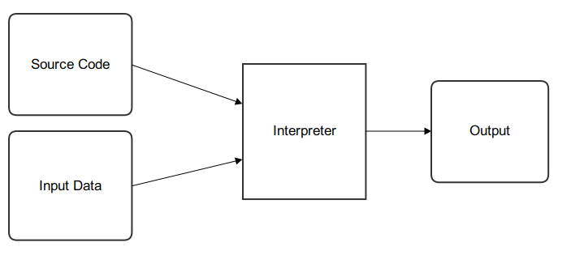
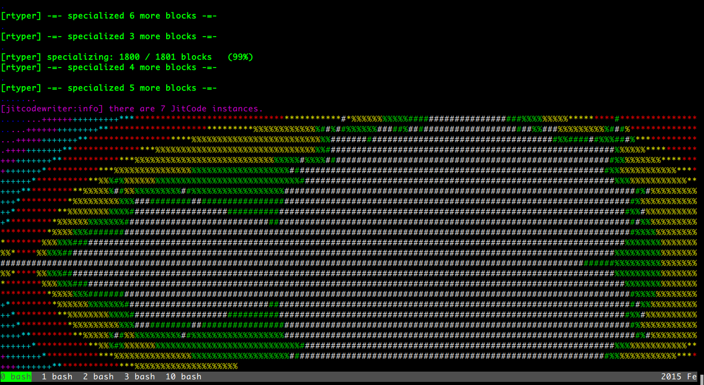

Contents
Introduction¶
Python 是一個 Dynamic Language， 官方提供了一個叫作 CPython 的 Interpreter 實作， Interpreter 讓這類 Dynamic Language 不用事先 compile 過才可以執行， 只要寫好 script 後丟進去就可以跑， 以下有 Compiler 和 Interpreter 簡陋的流程圖 :
Compiler :

Interpreter :
CPython 的實作只維持在很標準的方式， 相較之下並沒有花費大量的努力往更好的效能去調整， 一來應該是商業公司投資的資源量不夠， 再來應該是人力也不夠。
雖然在 2009 年一度從 Google 發起一個叫作 Unladen Swallow 的 project， 目標是在 CPython 上利用 LLVM 做 just-in-time compiler， 不過最後在 2009 年底就漸漸中斷，目前只留下一個沒在開發的 branch。
目前幾個針對效能的實作中，Cython 和 PyPy 是最成熟可行的選項， Cython 是一個 Python 的 superset， 利用 Cython 提供的靜態型別宣告以及其他功能來修改程式， 最後經過 compile 後可以讓程式變得相當快速， 而 PyPy 則是一個 Drop-In Replacement 的實作， PyPy 的效能來自於 JIT、更有效率 Garbage Collection、更有效率的 Data Structure。
近期倒是有由 Dropbox 發起的新實作叫 Pysyon ， 目標是 based on LLVM 做一個有效率的 JIT 實作， 由於是個新專案，目前 release 只有到 0.2 版， 有 Dropbox 企業的金錢、人力資助下， 只要這專案持續下去，相信出來的效能是會蠻有看頭的， 不過專案目前還在早期開發中，就靜觀其變囉。
Tutorial¶
PyPy 的官方 Blog 上， 在 2011 年發了兩篇由 Andrew Brown 撰寫用 PyPy 來實作 Brainfuck Interpreter 的 Tutorial， 時至今日，已經來到了 2015 年，中間也經過了許多 release， 接下來將會以 PyPy 2.5 為試驗目標， 更新一些舊 Tutorial 上需要改變的地方，並且和其他實作做初步比較。 (本練習的 code 會放在 GitHub wdv4758h/brainfuck_bench )
PyPy 這個專案其實有兩個角色
- Python 的 Interpreter 實作
- 撰寫 Dynamic Languages 的 Interpreter 的 framework
“Interpreter 的 framework” 是 PyPy 這 project 最特別的地方， 接下來這篇的重點將會放在 “撰寫 Interpreter”
要做一個 Language 的 Interpreter 會需要以下事情
- source code parser
- a bytecode interpretation loop
- lots of standard library code
對於稍微複雜一點點的語言，實作這些這會需要不少的時間， 更別提中間還得考慮 Memory 管理、Data Type 的實作， 會有許多的東西需要煩惱。
如果可以用一個高階一點的語言來實作，那前面提到的事情就可以大幅化簡， 可以利用到一些高階語言的特色， 像是不用自己考慮記 Memory 管理、有好用的 Data Type 等， 但是講到這，想必有人就會想到這個實作的速度應該會 “很慢”， 在高階語言上在建一層來實作自己的語言， 速度會比原本可能就不快的高階語言還來的更慢， 所以 PyPy 就是來解決這部份的問題啦。
利用 PyPy 來寫 Interpreter 的話，要用的是一個叫作 RPython 的語言， 看名字就知道跟 Python 有關，RPython 全名叫 Restricted Python， 是一個 Python 的 subset，既然是 subset 也就代表寫出來的還是一個 Python 程式， 但是 RPython 的特點是它的 type 是 inferable 的， 所以雖然一樣不寫出 type，但是可以做到 statically typed， 而 PyPy 的 RPython toolchain 會把 RPython 的 code 轉成 C code 再丟給 GCC 或 Clang 這類 C compiler 來 compile 成 native code， 藉此你可以獲得 native code 的 interpreter，所以會跑的比原本疊在 interpreter 上的 interpreter 來的快， 在這當中 PyPy 還可以幫你處理 Garbage Collecion 和 JIT。
關於 RPython 的內容，有興趣的話可以看 2007 年 “RPython: a Step Towards Reconciling Dynamically and Statically Typed OO Languages” 這篇 paper 裡的內容 (Bibtex key : AACM-DLS07)， 或是這邊有 slide 版本 。
關於 PyPy 裡面用到的 JIT 技術可以看這篇 (2012) PyPy JIT under the hood 當作入門。
Brainfuck Interpreter - Begin¶
Brainfuck spec :
>
|
指標加一 |
<
|
指標減一 |
+
|
指標指向的 byte 的值加一 |
-
|
指標指向的 byte 的值減一 |
.
|
輸出指標指向的 byte (ASCII) |
,
|
輸入到指標指向的 byte (ASCII) |
[
|
如果指標指向的 byte 為零，向後跳到對應的 ] 指令的下一指令 |
]
|
如果指標指向的 byte 不為零，向前跳到對應的 [ 指令的下一指令 |
Brainfuck to C (assuming “ptr” is of type “unsigned char*”) :
| brainfuck command | C equivalent |
|---|---|
| (Program Start) | char array[infinitely large size] = {0};
char *ptr=array;
|
>
|
++ptr;
|
<
|
--ptr;
|
+
|
++*ptr;
|
-
|
--*ptr;
|
.
|
putchar(*ptr);
|
,
|
*ptr=getchar();
|
[
|
while (*ptr) {
|
]
|
}
|
另外任何不在 Brainfuck spec 裡的東西都會被忽略
以下我們開始做 Brainfuck Interpreter
首先先做 parser 還有 main loop : (以下 code 大部份來自官方 Tutorial 的 example 1)
#!/usr/bin/env python
# -*- coding: utf-8 -*-
import sys
class Tape(object):
"""
因為 Brainfuck 的 code 就像是在 Tape 上操作一樣，
所以有這個 class 來處理所有 action
"""
def __init__(self):
self.thetape = [0]
self.position = 0
def get(self):
return self.thetape[self.position]
def set(self, val):
self.thetape[self.position] = val
def inc(self):
self.thetape[self.position] += 1
def dec(self):
self.thetape[self.position] -= 1
def advance(self):
self.position += 1
if len(self.thetape) <= self.position:
self.thetape.append(0)
def devance(self):
self.position -= 1
def main_loop(program, bracket_map):
pc = 0
tape = Tape()
while pc < len(program):
code = program[pc]
if code == '>':
tape.advance()
elif code == '<':
tape.devance()
elif code == '+':
tape.inc()
elif code == '-':
tape.dec()
elif code == '.':
# print
sys.stdout.write(chr(tape.get()))
elif code == ',':
# read from stdin
tape.set(ord(sys.stdin.read(1)))
elif code == '[' and tape.get() == 0:
# Skip forward to the matching ]
pc = bracket_map[pc]
elif code == ']' and tape.get() != 0:
# Skip back to the matching [
pc = bracket_map[pc]
pc += 1
def parse(program):
parsed = []
bracket_map = {}
leftstack = []
pc = 0
for char in program:
if char in ('[', ']', '<', '>', '+', '-', ',', '.'):
parsed.append(char)
if char == '[':
leftstack.append(pc)
elif char == ']':
left = leftstack.pop()
right = pc
bracket_map[left] = right
bracket_map[right] = left
pc += 1
return ''.join(parsed), bracket_map
def run(input_file):
with open(input_file, 'r') as f:
program, bracket_map = parse(f.read())
main_loop(program, bracket_map)
if __name__ == "__main__":
run(sys.argv[1])
PyPy Translation¶
在 PyPy repo 的 pypy/rpython/translator/goal/ 裡有一些範例，
其中 targetnopstandalone.py 是簡單的 Hello World
在這邊，我們需要一個叫做 target 的 function，
它會回傳另一個 function 作為 entry point，
PyPy 翻譯時會先找叫作 target 的 function，
call 它後從它回傳的 function 開始翻譯，
而最後產生的執行檔在執行時傳入的參數也是給這個回傳的 function
def run(input_file):
with open(input_file, 'r') as f:
program, bracket_map = parse(f.read())
main_loop(program, bracket_map)
def entry_point(argv):
if len(argv) > 1:
filename = argv[1]
else:
print("You must supply a filename")
return 1
run(filename)
return 0
def target(*args):
return entry_point
if __name__ == "__main__":
entry_point(sys.argv)
此外還有一個部份需要修改，就是用到 sys module 裡的 stdin/stdout 的部份， 因為目前 RPython 並沒有支援 sys.stdin 和 sys.stdout (雖然開發者說其實可以用 os.read 和 os.write 包裝) 所以需要改成用 os.read 和 os.write
import os
# sys.stdout.write(chr(tape.get()))
os.write(1, chr(tape.get())) # 1 for stdout
# tape.set(ord(sys.stdin.read(1)))
data = os.read(0, 1) # 0 for stdin, 1 for one byte
if data != '':
tape.set(ord(data[0]))
接下來需要抓 PyPy 的 source code :
hg clone https://bitbucket.org/pypy/pypy
接下來就交給 PyPy 做轉換
pypy/rpython/bin/rpython example2.py
然後就會看到許多 PyPy 吐出來的訊息，最後產生 example2-c 這個執行檔，
這個轉換在我機器 (虛擬機) 上大約需要 4x ~ 5x 秒
結果 :
| File Size | 290552 bytes |
| Translation Time | 56.5 s |
| Test File | Execution Time |
|---|---|
| mandel.b | 68.61 s |
接著試跑一下
./example2-c mandel.b
Bash 裡有自己的 time command 可以看執行時間， 但是如果要更多資訊的話 (-v)，需要 GNU 版的 time command
sudo pacman -S time
time -v ./example2-c mandel.b
以上是成功的利用 RPython 寫了 Brainfuck Interpreter 交給 PyPy 的 RPython toolchain 轉成 machine code ~
複習一下，要可以給 PyPy 的 RPython toolchain 轉換需要以下條件
- 符合 RPython 語法、功能
- 有
target這個 function 回傳進入的 function
如果想看更多 translate 時可以開的優化參數的話可以看 這裡
Compile with Clang¶
參數 : --cc=clang
Garbage Collection¶
參數 : --gc=incminimark
目前可用的選項 :
- boehm
- ref (default)
- semispace
- statistics
- generation
- hybrid
- minimark
- incminimark
- none
Brainfuck Interpreter - JIT¶
前面試過了利用 PyPy 的 RPython toolchain 幫我們把 RPython code 轉成 C 去 compile， 接下來是利用 PyPy 幫我們做 JIT 出來， 感謝 PyPy 開發者的努力，我們要在 RPython 上做出 JIT 並不難， 因為 PyPy 的 JIT generator 有幾個目標 :
- 簡單 (基於原本的 Interpreter 上，只要做少許修改就能有 JIT)
- Maintainable (不會因為加了 JIT 就造成需要開另外的 project 分別 maintain)
- 夠快 (雖然 JIT 是生出來的，但是也要速度也要夠快)
在這目標下，就算是沒有大量人力、金錢贊助的語言，也能簡單做出不錯的 JIT， 下面就讓我們來嘗試一下 ~
(詳細訊息請看 RPython Documentation - JIT )
要讓 PyPy 的 RPython toolchain 生出 JIT 需要提供一些資訊給它，
首先是告訴它哪些東西構成一個 execution frame，
在我們的 Brainfuck Interpreter 中並沒有真的 stack frame，
這問題就變成在執行一個 command 的時候，
哪些東西是不變的，哪些是會變的，
不變的被稱做 “green“，會變的稱做 “red“，
在我們的例子中，green 有 “pc”、”program”、”brakcet_map”，
red 有 “tape”，
接著就從 rpython.rlib.jit 取得 JitDriver 這個 metaclass 來生出我們需要要的 class
from rpython.rlib.jit import JitDriver
jitdriver = JitDriver(greens=['pc', 'program', 'bracket_map'], reds=['tape'])
然後在 main loop 裡的 while 開頭 call jit_merge_point
jitdriver.jit_merge_point(pc=pc, tape=tape, program=program, bracket_map=bracket_map)
接下來轉換的時候多加一個 --opt=jit 參數
pypy/rpython/bin/rpython --opt=jit example3.py
總結需要做的事 :
- import
JitDriver進來，把 green 和 red 變數分好 - 在 main loop 裡 while 一開始的地方 call
jit_merge_point把變數傳進去 - translate 的時候加上
--opt=jit參數
開 JIT 參數後，轉換的時間就變長，檔案也變大，但是跑下去就快很多
結果 :
| File Size | 5954320 bytes |
| Translation Time | 977.4 s |
| Test File | Execution Time |
|---|---|
| mandel.b | 27.64 s |
沒改很多 code，只做了 import 和寫幾行去 call import 進來的東西， 時間從 68.61 s 變 27.64 s (不過還是很慢)
附上轉換時的圖 XD
註 :
以前還需要寫一個 jitpolicy function，
但是現在已經是 default 了 (看 rpython/translator/driver.py)，
所以不用寫
def jitpolicy(driver):
from rpython.jit.codewriter.policy import JitPolicy
return JitPolicy()
Tracing JIT¶
在試完生出的 JIT 的速度後， 來了解一下它是怎麼運作的。
Interpreter 執行的是我們寫的 interpreter code， 當發現 target laugange (Brainfuck) 寫的某段 code 很常跑時， 會把這部份標成 “Hot”，並且會做追蹤，當下一次進到這個循環的時候， interpreter 會進入 tracing mode，把每個指令紀錄下來，循環結束後， tracing mode 就停止，把追蹤紀錄丟給 optimizer， 接著丟給 assembler，產生 machine code 在之後執行時使用。
基於對原本 interpreter 的一些 assumption， 生出的 machine code 通常會對很多地方進行優化， 因此生出的 machine code 會包含一些 guard 做驗證， 驗證失敗的話就退回去使用原本 interpreter 的 code。
Debug and Trace Log¶
雖然前面已經生出了不錯的結果， 但是總是會想要知道還能不能更好， 所以我們需要知道 JIT 做了些什麼事， 接下來就寫一個紀錄用的 function (參數是前面提過的 green 變數) 並傳給 jitdriver
def get_location(pc, program, bracket_map):
return "%s_%s_%s" % (
program[:pc], program[pc], program[pc+1:]
)
jitdriver = JitDriver(
greens=['pc', 'program', 'bracket_map'],
reds=['tape'],
get_printable_location=get_location
)
用跟前面一樣的方式轉換 :
pypy/rpython/bin/rpython --opt=jit example4.py
接下來跑程式的時候先加環境變數來把操作寫進 log
PYPYLOG=jit-log-opt:logfile ./example4-c test.b
這 log 可以看出有哪些部份被轉成了 machine code， 這在尋找有那邊可以優化的時候很有用
每個 trace 的開頭都是像這樣
[3c091099e7a4a7] {jit-log-opt-loop
結尾都是像這樣
[3c091099eae17d] jit-log-opt-loop}
中間則是每次執行的操作，有些操作如果被優化掉的話就不會出現
Optimize¶
elidable (old : purefunction)¶
由於每次的 loop 都會去 dictionary 裡查對應的位址，
但是其實這個 dictionary 裡的資訊是不會變的，
所以是可以直接編成 machine code 來加速，
但是對 PyPy 而言，那個 dictionary 有可能會變動，
但它不知道其實資料不會再改了，
所以我們可以告訴它同樣的輸入一定會有相同的輸出，
這可以用 PyPy 裡的 elidable (以前是 purefunction) decorator 做告知
from rpython.rlib.jit import elidable
@elidable
def get_matching_bracket(bracket_map, pc):
return bracket_map[pc]
# 下面把查 bracket_map 的地方換掉
接下來跟前面一樣做轉換，最後拿到的程式就比原本快很多
| File Size | 5852352 bytes |
| Translation Time | 960.2 s |
| Test File | Execution Time |
|---|---|
| mandel.b | 9.58 s |
結果從 27.64 s 降到了 9.58 s
Delay Output¶
對電腦來說 I/O 是很慢的，所以原本每個 byte 這樣讀讀寫寫也會有一點效能損失， 所以可以把直先存起來，之後再一次 output， 對於有大量 output 的 brainfuck 程式可能可以有一點點的幫助 (不多)
class Tape(object):
def __init__(self):
self.thetape = [0]
self.position = 0
self.output = ''
self.output_threshold = 50
def get(self):
return self.thetape[self.position]
def set(self, val):
self.thetape[self.position] = val
def inc(self):
self.thetape[self.position] += 1
def dec(self):
self.thetape[self.position] -= 1
def advance(self):
self.position += 1
if len(self.thetape) <= self.position:
self.thetape.append(0)
def devance(self):
self.position -= 1
def clear(self):
if self.output:
os.write(1, self.output) # 1 for stdout
self.output = ''
def read(self):
self.clear()
data = os.read(0, 1) # 0 for stdin, 1 for one byte
if data:
self.set(ord(data[0]))
def write(self):
self.output += chr(self.get())
if len(self.output) > self.output_threshold:
os.write(1, self.output) # 1 for stdout
self.output = ''
總結¶
這個 Tutorial 做的只是簡單的 Brainfuck Interpreter， 離真正實用的語言的 interpreter 還有很大的差距， 但這邊可以讓我們看出在還沒化很多心力下去調整效能前， 例用 RPython 提供給我們的 toolchain 是可以簡單獲得不錯的效益的， 當然事實上是還有很多可以調整的空間， 不過已經讓我們跨出例用 RPython toolchain 的第一步了 ~
這整個流程試下來，覺得有很多地方看到是可以做的更好的， 像是 RPython 可以做到更完善的支援， 這樣寫起來會更順利， 還有 toolchain 轉換的時間也可能再降低， 出來的 code size 可能也可以更小， 速度也可能更快， 背後 backend 也可能更多樣 (LLVM backend 好像碰到一些障礙要先幫 LLVM 上 patch 才能接起來？)， 諸如此類的問題， 總結一個問題就是 ... 缺錢， 就像是 StackOverflow 上 這篇 的答案一樣 ...
What blocks Ruby, Python to get Javascript V8 speed?
Nothing.
Well, okay: money. (And time, people, resources, but if you have money, you can buy those.)
不過 PyPy 做到現在也算是個有特色的專案了， 不僅僅是一個 Python 的實作， 而有了一個完整的 toolchain， 而且包含幫忙處理 GC 和 JIT， 這樣的專案和成熟度， 目前應該找不到相似對手 (從 這篇 StackOverflow 的回答 也可以看出還沒有類似的成熟專案)， 無論數年後這專案走向如何， 當中累積的技術都將為未來奠定基礎。
最後複習整個流程 :
- 用 RPython 寫你的 Interpreter (需要有 target function)
- 針對 main loop 把變數分類、call JIT 的 Driver class
- 丟下去 toolchain 轉換
- 效能還不夠時，找出不會變得地方用 “elidable” decorator 做告知
額外紀錄¶
with statement in RPython¶
在寫 example 的時候，我開檔案那邊用的是 with statement 來幫我 handle，
結果發現丟下去轉換的時候不會過，去 PyPy irc 問了後，
發現其實 RPython 是有支援 with statement 的，
只是近期在 RPython 對檔案的部份有了 rpython/rlib/rfile.py 這個實作，
在 RPython 裡 built-in 的 open() 回傳的是這個 RFile class 的 instance，
RPython 的 RFile 實作的是完整的 Python files 的 subset，
但目前沒有寫 __enter__ 和 __exit__ methods，
過沒多久開發者 Armin Rigo 就送了
一個 commit
補上了這部份，
于是乎，我可以繼續用 with statement 丟下去給 PyPy 轉了 ~
RPython’s print statement¶
RPython 裡面其實是有支援 print statement 的， 但是那大多只用於 debug， 多數情況都用 os.read / os.write， 不過其實可以用類似 “os.fdopen(1)” 的方法來拿到 stdout (不過要在 RPython function 裡，而不是 module global)， 所以其實可以做到當我在 RPython 用 sys.stdout 時其實後面是 call rfile.py 裡面類似 getstdout() 的 function， 它會取得並且 cache 用 os.fdopen() 取得的 rfile。
畢竟 RPython 是要拿來寫 interpreter 的， 有 os module 可以用來 I/O 其實也很夠， 只是如果有 sys.stdout / sys.stdin 的支援對很多地方會更方便些， 不過 PyPy team 應該也是缺錢缺人手， 這也不算是核心大問題， 暫時就先這樣吧，等看看哪天有人 contribute XD
Comple with Clang¶
雖然前面有提到可以用 --cc=clang 來用 clang compile，
但其實我在試的時候有出現問題，
不過到 irc 上尋問後得到了解法，
就是加上 --gcrootfinder=shadowstack ，
以下是 Armin Rigo 的回覆
I guess clang produces subtly different assembler that throws off "trackgcroot"
you can use --gcrootfinder=shadowstack
that will be slightly slower
(~10% and only before jit-compilation)
(trackgcroot is a hack used with --gcrootfinder=asmgcc, which is enabled only on Linux;
usually we have to fix it slightly for every new version of gcc...)
if ... elif¶
在翻參數的時候，發現有個優化參數叫作 merge_if_blocks ，
顧名思義就是把 Python 多層的 if ... elif block 合成 C 裡 switch 的形式，
可以看
documentation 裡的說明
裡面有示意圖 XD
string replace¶
RPython 裡的 str 目前只支援 char 的 replace，
但是可以從 rpython/rlib/rstring.py 裡找到 replace function 來替代，
from rpython.rlib.rstring import replace ，
replace(string, old, new, max)
以下是 irc 上詢問得到得回答
wdv| any reason that RPython's string replace only works for char args ?
ronan| wdv: no very good reasons
ronan| wdv: it would be a bit of work to implement and interpreters are usually better off writing their own
replace at a low level
cfbolz| ronan, wdv: there is even a usable implementation, in rlib.rstring, I think
rpython/rlib/jit.py¶
由於在看前面的 rpython/rlib/rstring.py 裡的 replace function 時，
發現上面有一些 decorator，其中一個是 jit.elidable ，
覺得好奇就去翻了一下，不翻還好，
億翻發現就 tutorial 上寫的 purefunction 已經 deprecated 了 XD，
現在要用剛剛看到的 “elidable“，
趕快來改一下 ~
Embedding PyPy¶
在 irc 上問問題的時候，剛好看到前面有人問了 libpypy-c.so 是幹嘛用的，
原來是近期 PyPy 提供的功能，可以把 PyPy 嵌入其他地方，
官方 Document
有寫了簡單的 C 範例，include “PyPy.h” 後，
把在 C 程式裡的 Python code char array 丟進去執行，
甚至可以把丟參數給 Python 端的 function，
提供了未來把 PyPy 嵌入別的地方的機會 ~
附上 irc log :
mstuchli| This is prolly a stupid question, but the libpypy-c.so is a new thing, correct? What's it for?
fijal| mstuchli: for embedding
arigato| mstuchli: for embedding pypy into some other program, more precisely; now the "pypy" executable is
very small and just calls libpypy-c.so, but other programs may call it too
Reference¶
- Wikipedia - Just-in-time compilation
- Wikipedia - Tracing just-in-time compilation
- Wikipedia - Interpreter (computing)
- Wikipedia - Unladen Swallow
- PyPy: Dynamic Language Compilation Framework
- Ryan Kelly: PyPy.js: What? How? Why?
- The Architecture of Open Source Applications - PyPy
- (2013) (video) [jserv] PyPy 簡介
- brainfuck optimization strategies
- 打造 Brainfuck 的 JIT compiler
- 透過 LLVM 打造 Brainfuck JIT compiler
- Optimizing brainfuck compiler
- Brainfuck Interpreter
- Tracing the Meta-Level: PyPy’s Tracing JIT Compiler
- Carl Friedrich Bolz’s site
- RPython: a Step Towards Reconciling Dynamically and Statically Typed OO Languages
- PyPy’s Approach to Virtual Machine Construction